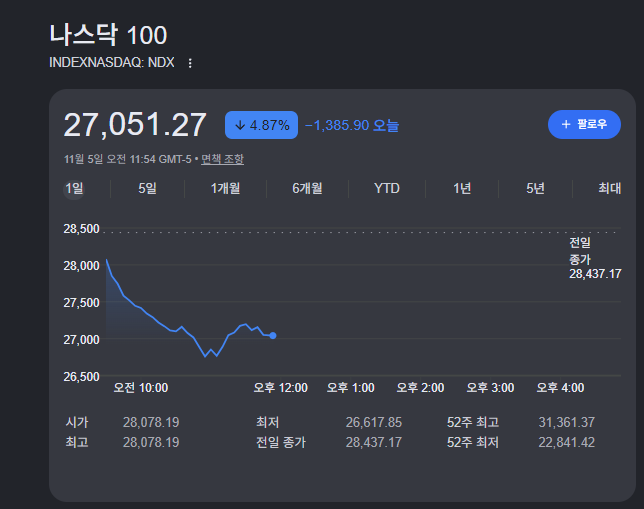
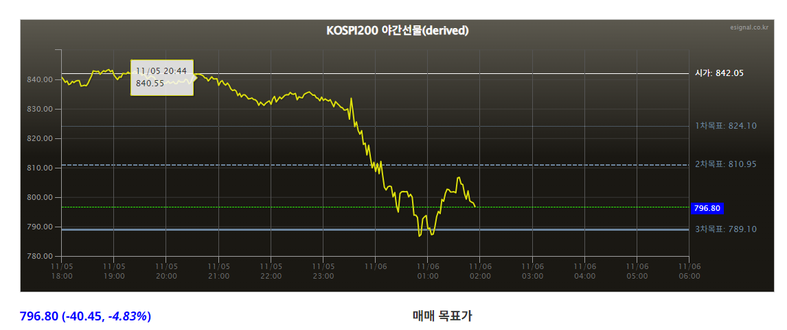

주식시장 대공황 입갤..


주식시장 대공황 입갤..
근데 공화 했어도 대공황 왔을거같긴함
근데 이정도는 아닐듯
맞죠 공화당이 이겼어도 같은 꼴이었을듯
맞음 걍 이유를 갖다댄거지 누가 이겨도 공황은 왔음...
왜? 저새끼가 싸지른 똥들 때문에
민주가 이겼는데 대공황 안오면 지가 일으켰을수도 있음 ㅋㅋ
그래도 이게 맞다고 생각
씨발놈아 그러면 니가 이겼어야지 똥 푸짐하게 뷔페 풀코스로 싸놓고 뭐라는거야
저 새끼는 대공황이 아니라 미국을 망하게 만드는데 뭔
민주당이라서 주식 폭락하는 게 아니라
미국 역사상 최장기 정부 셧다운이 예약 되어 있는데 주식 안 빼는 게 이상하지.
그거치곤 ai관련주만 빠지고있음
여태껏 지가 해온 무차별 관세정책이랑 이란전쟁이 있는데 ㅋㅋㅋ
민주당 이기자마자 기업들 규제하겠다고 미쳐날뛰니 당연한거지
근데 민주당이든 뭐든 사실 실세 정당이 바뀌면 주식 시장은 무조건 개꼴박하게 되어있음
애초에 트럼프 저지랄하는데 오른게 이상한거아닌가
ㅈㄹ 하면서도 AI를 밀어줬으니까 ㅋㅋ 거품이다 뭐다 해도 그큰돈이 움직이니 경제에 기여를 어느 정도 한건 맞음. AI 투자 없었으면 미국도 불황이 진작에 왔을거라는 얘기도 있던데. 근데 그만큼 리스크가 커지는 것도 당연하니까 어느 정도 규제를 하는 것도 틀린건 아닌듯
(전쟁을 시작하며)
저 새끼 탄핵 되면 오르겟네
탄핵 왜 함? 식물로 만들면 시마이인데
똥싼새끼가 역정이네
또 바이든탓하면 되긴해
나는 민주당 될거같아서 다 팔았음
트럼트가 ㅂㅅ이건 아니건 주식하는 사람이면 파는게맞음
돈만보자
반도체는 이제 사라지고
태양광의 시대가 온다잖아
탑 올리고 태양신께 제사나 지내자
이제 미국 ai 발전 제동걸리고 중국이 바짝 올라오려나
다시 오르겠지 머
숏한테는 대호황이제
하다하다 저런 개씹소리를 인용하네
민주당이 이긴 기념으로 할인 행사 여는건데 안 사고 뭐 하냐?
이미 살만큼 사서... 현금비중 조절해야지
민주당 새끼들이 AI 규제니 뭐니 하는 새끼들이라
미국 주식도 개박살나는데 이새끼들 지금 기조 유지하려나? ㅋㅋ
내년초여름 ? 정도 까지 예상 ㅋㅋ
내 나스닥 첨으로 파란불 들어옴 십새야
본인 주식창을 보고서는 미국 정치를 바라보니 별 헛소리가 다 나오지.
Ai 섹터 주가가 떨어지면 미국이 망하냐 ㅋㅋㅋㅋㅋㅋ
애초에 트럼프 등에 업고서는 무분별한 순환출자랑 회사채 남발로 성장한 섹터고,
정치계나 금융계에서 전부 위험하다고 경고하고 있었는데,
이제 와서 떨어지니 민주당이 잘못하고 있는 줄 아네 ㅋㅋㅋㅋ
그렇다고 직전 실적 발표가 좋았음?
하다못해 구글도 수익성 박살에 유동 현금이 싹 말랐는데,
섹터가 멀쩡하길 바랐음?
메타나 구글 같은 애들 지금 회사채 얼마 추가하려는지는 아는건가?
본인 주식창에 ‘좋은’거랑 미국 정치에 대한 이해는 제발 분리를 해라.
애초에 민주당 승리 48시간에 이렇게 박살나는거면,
기존 주가 가치가 뻠핑된걸로 봐야지,
뭔 별별 개소리가 다 나오지.
수 십 ~ 백 년만에 공화당 텃밭이 민주당으로 돌아설 정도로 미국 상황이 개판인데,
Ai 섹터 떨어지는걸로 대공황 소리가 다 나오네 ㅋㅋㅋㅋㅋ
차라리 진짜 대공황은 유가는 두 배 넘게 오르고, ai로 일자리 박살나는 지금이지 뭔 ㅋㅋㅋㅋㅋ
답정너 극우는 그런거 몰라
좌파진영 욕만할수있으면 애미애비도 팔껄
뭔 선거결과로 하루 폭락온걸로 대공황 ㅇㅈㄹ이노 호들갑 개오지네 하여간ㅋㅋㅋ
대공황은 모르겠고 재테크와 투자의 신처럼 굴던 애들 싹 다 조용해져서 꼬시다는 생각은 듦
꼭 폭락빔을 쳐 맞아야 겸손해지는 애들이 있어요
삼하 주주입장에서는 반대쪽에서 데센이야기만 나오면 발작을해서 트럼프가 필요악이긴했지
이새끼 이런 시나리오면...
1. 트럼프가 미국 경제랑 정치 개 박살을 냄
2. 공황 전조가 옴.
3. 트럼프가 병신짓을 해서 민주당이 반사이익을 얻음
4. 민주당 집권 시기에 대공황이든 뭐든 옴
5. 평균 지능이 낮은 미국인들 특성상 트럼프 잘못이 아니라 민주당 잘못이라고 할 가능성이 높을 것 같음
6. 다음 대선 때 공화당이 또 뽑힘
7. 결국 공화당 대통령만 2번.
캬... 트럼프의 큰 그림...미친노인네
어제 오른거 고대로 다 반납 ㅠ